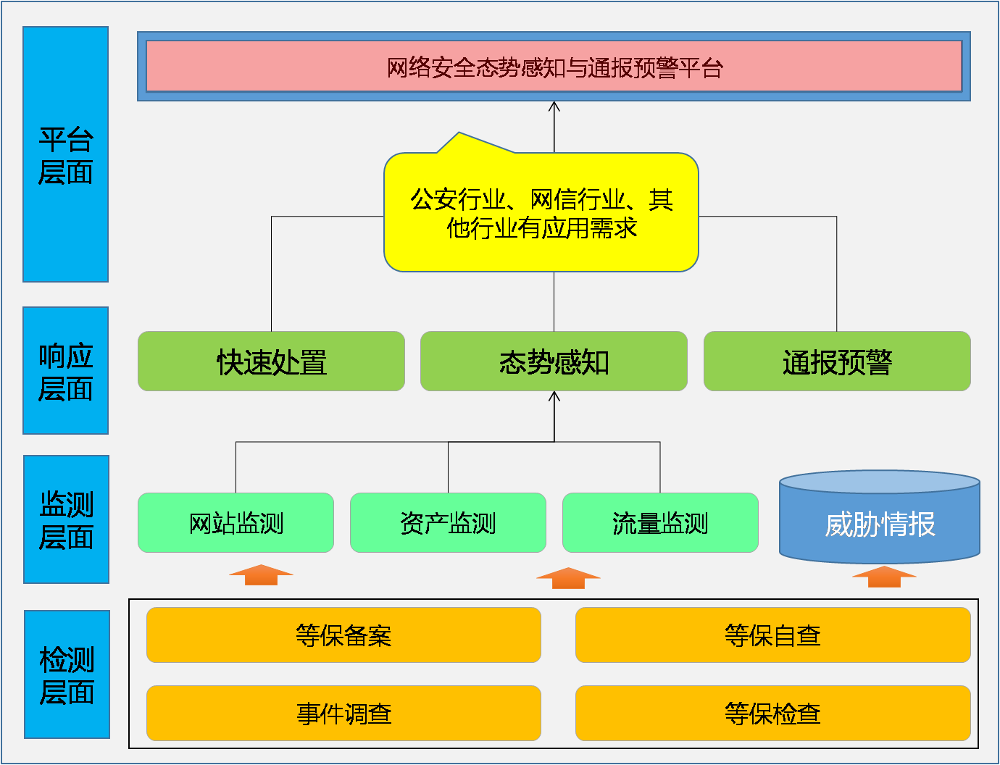

北京云盾
习总书记在4.19网络安全与信息化工作会议上指出“感知网络安全态势是最基本最基础的工作”，并强调了要全面摸清家底的重要性。公安部下发的《关于组织开展网络安全态势感知与通报预警平台建设工作的通知》有关精神，要求建立相关机制和技术支撑体系，建立信息风险的监测、预警和响应能力，减少网络安全事件造成的损失。
“红测”网络安全态势感知与通报预警平台按照一体化、标准化、智能化、可视化要求进行建设。平台建成后，可实现对区域网络安全的态势觉察、跟踪、预测和预警，全面、实时掌握辖区内网络安全总体态势，掌握网络安全威胁、风险和隐患，及时监测漏洞、病毒木马、网络攻击情况，发现网络安全事案件线索；及时通报预警重大网络安全威胁，对事案件进行应急调查处置，有效防范和打击网络攻击等违法犯罪活动。态势感知平台集"打"、"防"、"管"、"控"功能于一体，达到实时态势感知、准确安全监测、及时应急处置的目标。
通过在辖区、行业单位内建设网络安全态势感知与通报预警平台，建立监管机关（如网信、公安）内部，以及监管机关与社会单位之间的信息交流和联系渠道。摸清家底、找出漏洞、发现风险，构建区域网络空间的总体安全管控平台，把握网络空间安全态势。
平台由监控对象、采集引擎和数据处理三部分组成。监控对象主要包括辖区内政企单位互联网、重要网站、重要信息系统和辖区内网络安全事件；采集引擎主要包括基础数据采集、重点网站监测、流量监测和资产监测等；数据处理主要包括云安全存储、大数据分析、通报预警、态势可视化展示、预测预警等功能模块组成。
产品由八大子系统组成：态势感知、通报预警、快速处置、侦查调查、安全监测（含流量监测、网络监测、资产监测三大模块）、等保管理（含等保备案、等保自查、等保检查三大模块）、威胁情报和第三方数据接入等。
平台采用技术手段与业务需求紧密结合的设计思想，不做单纯产品堆叠，使技术手段服务于日常监管工作。平台的基础数据分为动态数据、静态数据。动态数据通过部署四类引擎探针采集：网站远程监测引擎、内容监测引擎、网络资产探测引擎、流量监测引擎；静态数据通过互联网渠道采集。利用安全建模机制，将动态数据和静态数据进行关联分析，深入挖掘服务提供商、设备供应商与企事业单位等保建设情况、资产分布情况和信息系统被攻击情况之间的深层逻辑关系，并预测安全风险和威胁。
基于SOA架构，多模块开发模式，部署灵活运行稳定
立足于等级保护工作建设态势感知平台
全面采集基础数据，摸清家底、认清风险
工欲善其事必先利其器。平台建成后丰富了监管工具和手段
联系我们电话：010-64392662传真：010-64392662地址：北京市海淀区上地三街9号金隅嘉华大厦C座501室
法律声明Copyright © 北京云盾科技有限公司 版权所有 京ICP备05032414号 京公网安备11010802024551号